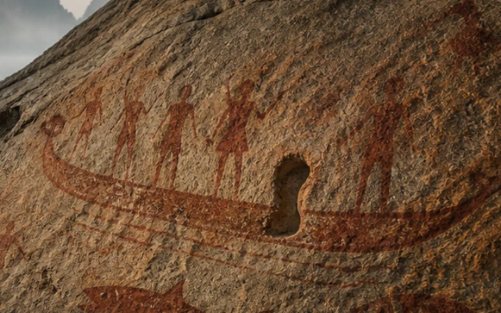

THE PLACE
More than 3,000 years ago, people left their marks on the rocks of this bay.
THE TRACE
People. Animals. Boats. And on every boat, the same empty place.

YOUR DISCOVERY
Only when the tracings overlap does the empty space become a sign.
They did not paint who went out. They painted who returned.
One is still missing.